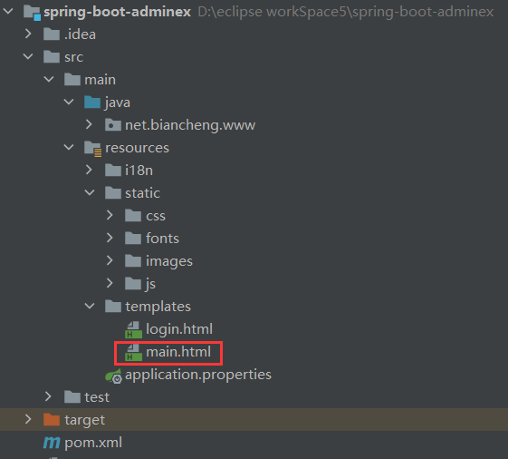
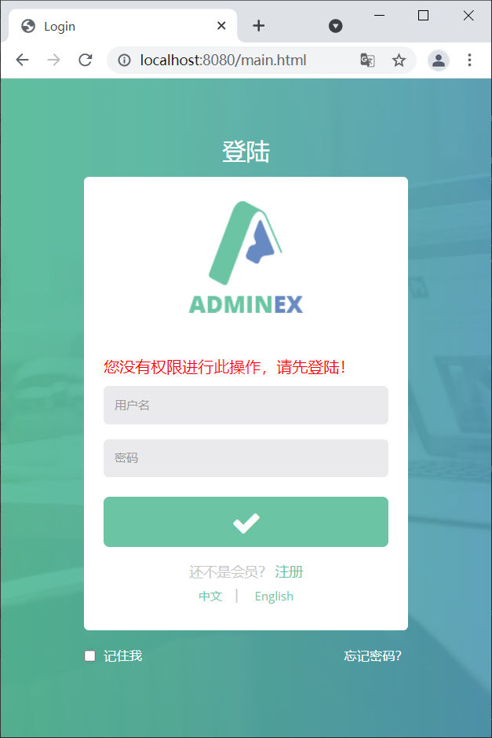
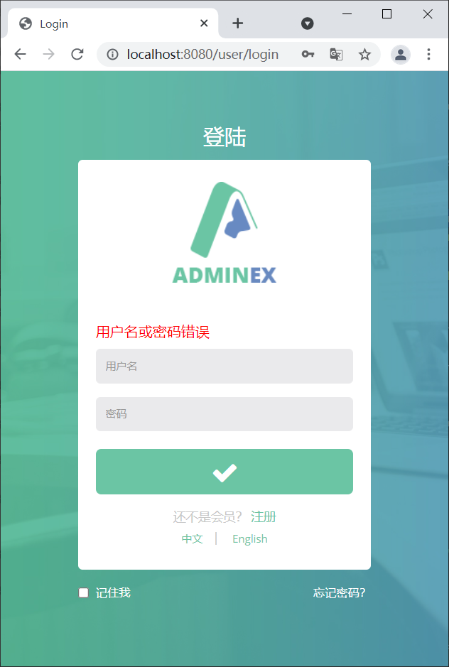

Spring Boot拦截器精讲
我们对拦截器并不陌生，无论是 Struts 2 还是 Spring MVC 中都提供了拦截器功能，它可以根据 URL 对请求进行拦截，主要应用于登陆校验、权限验证、乱码解决、性能监控和异常处理等功能上。Spring Boot 同样提供了拦截器功能。
在 Spring Boot 项目中，使用拦截器功能通常需要以下 3 步：
HandlerInterceptor 接口中定义以下 3 个方法，如下表。
在指定拦截器拦截规则时，调用了两个方法，这两个方法的说明如下：
2. 在 net.bianheng.www.controller 中创建一个 LoginController， 并在其中添加处理登陆请求的方法 doLogin()，代码如下。
3. 在配置类 MyMvcConfig 中添加视图映射，代码如下。
2. 在登陆页用户名和密码输入框内分别输入 “admin”和“admin123”，点击下方的登陆按钮，结果如下图。
3. 在登陆页用户名和密码输入框内分别输入 “admin”和“123456”，点击下方的登陆按钮，结果如下图。
在 Spring Boot 项目中，使用拦截器功能通常需要以下 3 步：
- 定义拦截器；
- 注册拦截器；
- 指定拦截规则（如果是拦截所有，静态资源也会被拦截）。
定义拦截器
在 Spring Boot 中定义拦截器十分的简单，只需要创建一个拦截器类，并实现 HandlerInterceptor 接口即可。HandlerInterceptor 接口中定义以下 3 个方法，如下表。
| 返回值类型 | 方法声明 | 描述 |
|---|---|---|
| boolean | preHandle(HttpServletRequest request, HttpServletResponse response, Object handler) | 该方法在控制器处理请求方法前执行，其返回值表示是否中断后续操作，返回 true 表示继续向下执行，返回 false 表示中断后续操作。 |
| void | postHandle(HttpServletRequest request, HttpServletResponse response, Object handler, ModelAndView modelAndView) | 该方法在控制器处理请求方法调用之后、解析视图之前执行，可以通过此方法对请求域中的模型和视图做进一步修改。 |
| void | afterCompletion(HttpServletRequest request, HttpServletResponse response, Object handler, Exception ex) | 该方法在视图渲染结束后执行，可以通过此方法实现资源清理、记录日志信息等工作。 |
示例1
以 spring-boot-adminex 项目为例，在 net.biancheng.www.componet 中创建一个名为 LoginInterceptor 的拦截器类，对登陆进行拦截，代码如下。
package net.biancheng.www.componet;
import lombok.extern.slf4j.Slf4j;
import org.springframework.web.servlet.HandlerInterceptor;
import org.springframework.web.servlet.ModelAndView;
import javax.servlet.http.HttpServletRequest;
import javax.servlet.http.HttpServletResponse;
@Slf4j
public class LoginInterceptor implements HandlerInterceptor {
/**
* 目标方法执行前
*
* @param request
* @param response
* @param handler
* @return
* @throws Exception
*/
@Override
public boolean preHandle(HttpServletRequest request, HttpServletResponse response, Object handler) throws Exception {
Object loginUser = request.getSession().getAttribute("loginUser");
if (loginUser == null) {
//未登录，返回登陆页
request.setAttribute("msg", "您没有权限进行此操作，请先登陆！");
request.getRequestDispatcher("/index.html").forward(request, response);
return false;
} else {
//放行
return true;
}
}
/**
* 目标方法执行后
*
* @param request
* @param response
* @param handler
* @param modelAndView
* @throws Exception
*/
@Override
public void postHandle(HttpServletRequest request, HttpServletResponse response, Object handler, ModelAndView modelAndView) throws Exception {
log.info("postHandle执行{}", modelAndView);
}
/**
* 页面渲染后
*
* @param request
* @param response
* @param handler
* @param ex
* @throws Exception
*/
@Override
public void afterCompletion(HttpServletRequest request, HttpServletResponse response, Object handler, Exception ex) throws Exception {
log.info("afterCompletion执行异常{}", ex);
}
}
注册拦截器
创建一个实现了 WebMvcConfigurer 接口的配置类（使用了 @Configuration 注解的类），重写 addInterceptors() 方法，并在该方法中调用 registry.addInterceptor() 方法将自定义的拦截器注册到容器中。示例 2
在配置类 MyMvcConfig 中，添加以下方法注册拦截器，代码如下。
@Configuration
public class MyMvcConfig implements WebMvcConfigurer {
......
@Override
public void addInterceptors(InterceptorRegistry registry) {
registry.addInterceptor(new LoginInterceptor());
}
}
指定拦截规则
修改 MyMvcConfig 配置类中 addInterceptors() 方法的代码，继续指定拦截器的拦截规则，代码如下。
@Slf4j
@Configuration
public class MyMvcConfig implements WebMvcConfigurer {
......
@Override
public void addInterceptors(InterceptorRegistry registry) {
log.info("注册拦截器");
registry.addInterceptor(new LoginInterceptor()).addPathPatterns("/**") //拦截所有请求，包括静态资源文件
.excludePathPatterns("/", "/login", "/index.html", "/user/login", "/css/**", "/images/**", "/js/**", "/fonts/**"); //放行登录页，登陆操作，静态资源
}
}
在指定拦截器拦截规则时，调用了两个方法，这两个方法的说明如下：
- addPathPatterns：该方法用于指定拦截路径，例如拦截路径为“/**”，表示拦截所有请求，包括对静态资源的请求。
- excludePathPatterns：该方法用于排除拦截路径，即指定不需要被拦截器拦截的请求。
至此，拦截器的基本功能已经完成，接下来，我们先实现 spring-boot-adminex 的登陆功能，为验证登陆拦截做准备。
实现登陆功能
1. 将 AdminEx 模板中的 index.html 改名为 main.html，并移动到 src/main/resources/templates 中，结构如下图。

图1：main 页面
2. 在 net.bianheng.www.controller 中创建一个 LoginController， 并在其中添加处理登陆请求的方法 doLogin()，代码如下。
package net.biancheng.www.controller;
import lombok.extern.slf4j.Slf4j;
import net.biancheng.www.bean.User;
import org.springframework.stereotype.Controller;
import org.springframework.util.StringUtils;
import org.springframework.web.bind.annotation.GetMapping;
import org.springframework.web.bind.annotation.PostMapping;
import org.springframework.web.bind.annotation.RequestMapping;
import javax.servlet.http.HttpSession;
import java.util.Map;
@Slf4j
@Controller
public class LoginController {
@RequestMapping("/user/login")
public String doLogin(User user, Map<String, Object> map, HttpSession session) {
if (user != null && StringUtils.hasText(user.getUsername()) && "123456".equals(user.getPassword())) {
session.setAttribute("loginUser", user);
log.info("登陆成功，用户名：" + user.getUsername());
//防止重复提交使用重定向
return "redirect:/main.html";
} else {
map.put("msg", "用户名或密码错误");
log.error("登陆失败");
return "login";
}
}
/*
@RequestMapping("/main.html")
public String mainPage(){
return "main";
}*/
}
3. 在配置类 MyMvcConfig 中添加视图映射，代码如下。
@Configuration
public class MyMvcConfig implements WebMvcConfigurer {
@Override
public void addViewControllers(ViewControllerRegistry registry) {
//当访问 “/” 或 “/index.html” 时，都直接跳转到登陆页面
registry.addViewController("/").setViewName("login");
registry.addViewController("/index.html").setViewName("login");
//添加视图映射 main.html 指向 dashboard.html
registry.addViewController("/main.html").setViewName("main");
}
......
}
4. 在 login.html 适当位置添加以下代码，显示错误信息。
<p style="color: red" th:text="${msg}" th:if="${not #strings.isEmpty(msg)}"></p>
验证登陆及登陆拦截功能
1. 启动 Spring Boot，在未登录的情况下，直接通过“http://localhost:8080/main.html”访问主页，结果如下图。

图1：登陆被拦截
2. 在登陆页用户名和密码输入框内分别输入 “admin”和“admin123”，点击下方的登陆按钮，结果如下图。

图2：登陆失败
3. 在登陆页用户名和密码输入框内分别输入 “admin”和“123456”，点击下方的登陆按钮，结果如下图。
关注公众号「站长严长生」，在手机上阅读所有教程，随时随地都能学习。内含一款搜索神器，免费下载全网书籍和视频。

微信扫码关注公众号